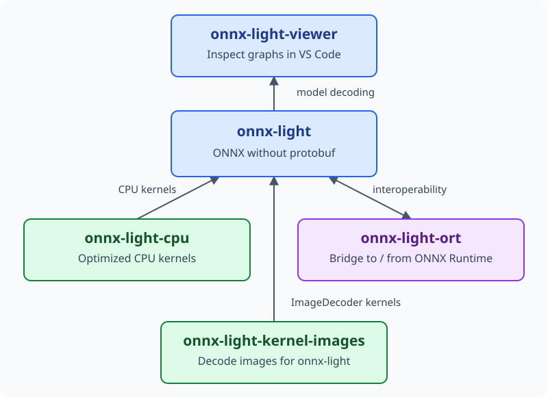
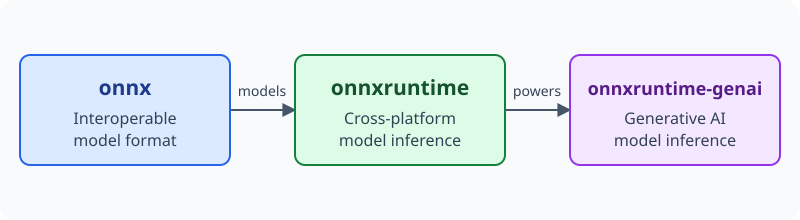
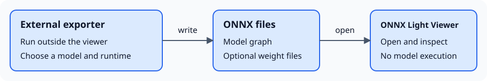

Links#
Related projects and export tools in the ONNX ecosystem. The viewer’s ONNX tab groups project and Exporters cards in the same design, with the packages or ecosystems each project specializes in. Each card’s book icon opens the project’s documentation; the project name opens its source repository.
onnx-light projects#


Local model inspection, CPU execution, image decoding, and ONNX Runtime interoperability.#
onnx-light-viewer: this VS Code extension for inspecting ONNX graphs locally without executing models. Specialized for: VS Code model inspection with
onnx-light. Documentation.onnx-light: ONNX without protobuf, used by this viewer to decode models locally. Specialized for: ONNX model I/O and graph analysis with
onnx-light. Documentation.onnx-light-cpu: optimized CPU kernels for onnx-light. Specialized for:
onnx-lightCPU execution. Documentation.onnx-light-kernel-images: ImageDecoder kernel extension for onnx-light. Specialized for: image decoding with
onnx-light. Documentation.onnx-light-ort: bidirectional interoperability between onnx-light and ONNX Runtime custom operators and execution providers. Specialized for:
onnx-lightandonnxruntimeinteroperability. Documentation.
ONNX and ONNX Runtime#


From a shared model format to general inference and generative AI. onnx-light reads the same ONNX format; onnx-light-ort connects it to ONNX Runtime.#
onnx: the open standard for machine learning model interoperability. Specialized for: framework-independent model interchange with
onnx. Documentation.onnxruntime: a cross-platform runtime for machine learning models. Specialized for: ONNX model execution with
onnxruntime. Documentation.onnxruntime-extensions: custom operators and tools for preprocessing and postprocessing. Specialized for:
onnxruntimepreprocessing and postprocessing withonnxruntime-extensions. Documentation.onnxruntime-genai: generative AI model inference with ONNX Runtime. Specialized for: generative model execution with
onnxruntime-genai. Documentation.
Exporters#
Use Convert to run an installed mbext, modelbuilder or Mobius exporter, or open a model exported separately. See Converting models. Supported models, operators and target runtimes vary by tool.


Conversion runs in a separate Python process; opening the resulting model does not execute its graph.#
Mobius: builds ONNX graphs with ONNX Script and pretrained weights rather than tracing a PyTorch model. Specialized for: Hugging Face Transformers and Diffusers models, including ONNX Runtime GenAI workflows. Documentation.
modelbuilder (ONNX Runtime GenAI): builds optimized and quantized ONNX graphs for supported generative AI architectures. Specialized for: Hugging Face Transformers models targeting
onnxruntime-genai. Documentation.mbext: a rewrite using
onnx-lightfor faster ONNX model construction and export. Specialized for: Hugging Face Transformers models targetingonnxruntime-genai, usingonnx-lightthrough themodelbuilderpackage. Documentation.yet-another-onnx-builder: uses
onnx-lightfor ONNX graph construction, optimization and shape inference, with theyobx.to_onnxconversion API. Specialized for: PyTorch, TensorFlow/Keras/LiteRT, scikit-learn, scikit-survival, category_encoders, imbalanced-learn, statsmodels, XGBoost and LightGBM, plus NumPy function tracing, usingyobxandonnx-light. SQL queries, pandas/Polars-style DataFrame transformations and JAX support are in progress. Documentation.sklearn-onnx: converts supported estimators and pipelines through
skl2onnx. Specialized for: scikit-learn models and pipelines. Documentation.tensorflow-onnx: converts models through
tf2onnx; TensorFlow.js support is experimental. Specialized for: TensorFlow, Keras, TFLite and TensorFlow.js. Documentation.onnxmltools: converts models from multiple machine-learning toolkits, including boosted-tree libraries. Specialized for: XGBoost, LightGBM, CatBoost, Core ML and other ML toolkits. Documentation.
The Convert panel supports mbext, modelbuilder and Mobius. Other project links do not imply built-in export integration.